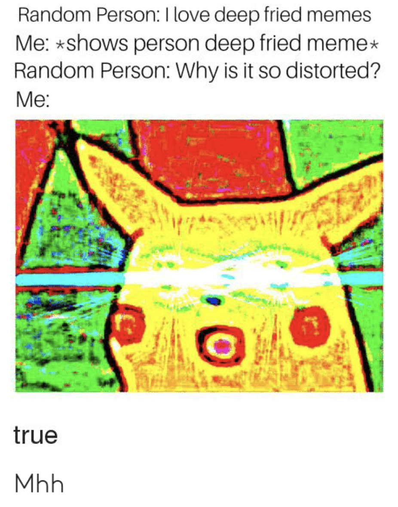
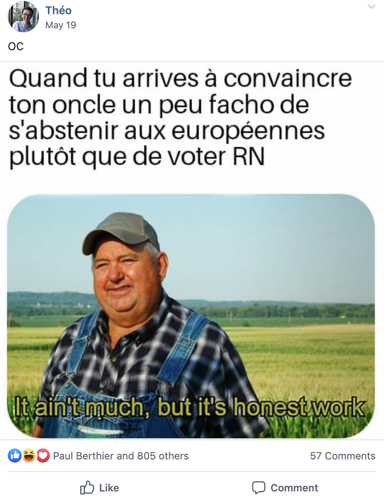
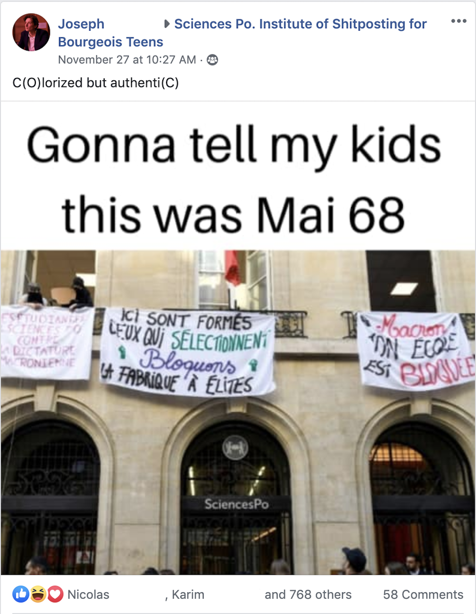
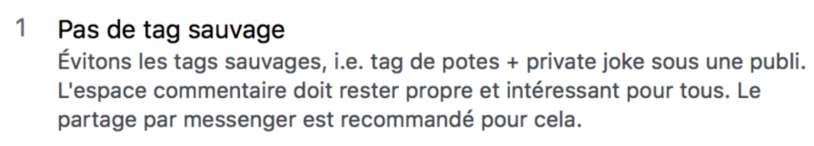
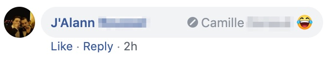
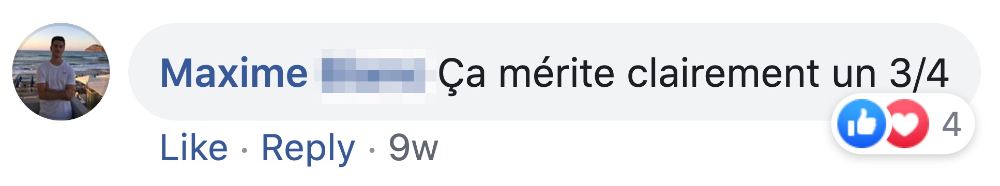
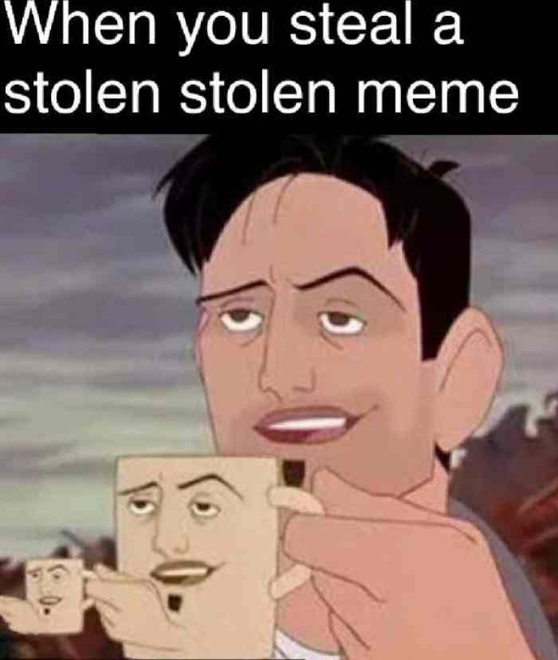

Petit lexique des expressions utilisées dans la "Neurchisphère"
-
"Bap pun"
Ce terme est utilisé pour désigner un jeu de mots volontairement absurde.
-
"Copypasta"
Ce terme, dans le cadre des groupes de memes, désigne le fait qu’un internaute ait “copié-collé” un texte ou un commentaire, sans apporter de plus-value à la discussion, souvent même sans aucun rapport et donc dans le but de spamer. Cette pratique était beaucoup utilisée sur 4Chan. Dans la “Neurchisphère”, les copypastas sont des commentaires devenus mythiques et donc ré-utilisés fréquemment.
-
"Deep fried meme"
Ce terme est utilisé pour parler des memes sur lesquels on a apposé de nombreux filtres et augmenté la saturation des couleurs afin de réduire volontairement la qualité de l’image.
 -
"Meme lord"
Le terme "meme lord" est utilisé pour désigner un internaute qui produit des memes jugés excellents par les autres membres du groupe.
-
"Mute"
Sur Facebook, le modérateur peut mettre en sourdine un membre du groupe ne respectant pas les règles établies pour une durée définie, souvent 7 jours. Cette sanction est souvent utilisée en cas de tag sauvage, et peut aussi mener à un ban (exclusion définitive du groupe).
-
"Normie"
Terme péjoratif utilisé par les personnes anticonformistes pour désigner ceux qui s’en tiennent aux pratiques et standards jugés mainstream. Pour les membres des groupes de memes sur Facebook, tagger ses amis dans les commentaires d’une vidéo à l’humour très accessible — souvent accompagné de l’emoji “ 😂” ou de “ptdrrrr” — est une pratique typiquement normie.
-
"OC"
Vient de l’anglais “original content”. Ce terme est fréquemment utilisé pour indiquer que le meme a bien été créé par l’auteur de la publication, et non récupéré sur internet. Il est particulièrement utilisé sur Reddit. Les créateurs s’amusent souvent à attirer l’attention sur les lettres O et C dans leur publication. Exemples :
  -
"Tag sauvage"
Consiste à identifier un ami Facebook dans les commentaires d’une publication pour la lui montrer, sans que le commentaire n’apporte de valeur ajoutée à la publication. Les tags sauvages sont formellement interdits dans la plupart des groupes de memes sur Facebook. Enfreindre la règle est généralement passible d’une exclusion du groupe, temporaire ou non. Exemple : (on remarquera que l’utilisateur a été exclu du groupe à cause de ce tag).
  -
"Trend"
Sur les groupes Facebook de memes, on remarque que le même template (l'image originelle du meme) est souvent utilisé fréquemment pendant une courte période puis progréssivement abandonné. On parle alors de trend, qui signifie "tendance" en français.
-
"Trois quarts (3/4)"
Désigne simplement le fait d’enregistrer un meme que l’on trouve sur un groupe/une page et de le reposter ailleurs sans mentionner son origine. Exemple :
 -
"Stolen"
Ce terme désigne simplement le fait d’enregistrer un meme que l’on trouve sur un groupe/une page et de le reposter ailleurs sans mentionner son origine. Parfois, les membres des groupes font preuve d'honnêteté et précisent "stolen sur [x]" dans leur publication.
 -
"Shitpost"
Désigne les publications d’internautes ayant pour but de diriger la conversation vers un hors sujet (troll, spam…), avec du contenu souvent absurde. Le groupe Facebook de memes de Sciences Po est nommé Sciences Po. Institute of Shitposting for Bourgeois Teens.